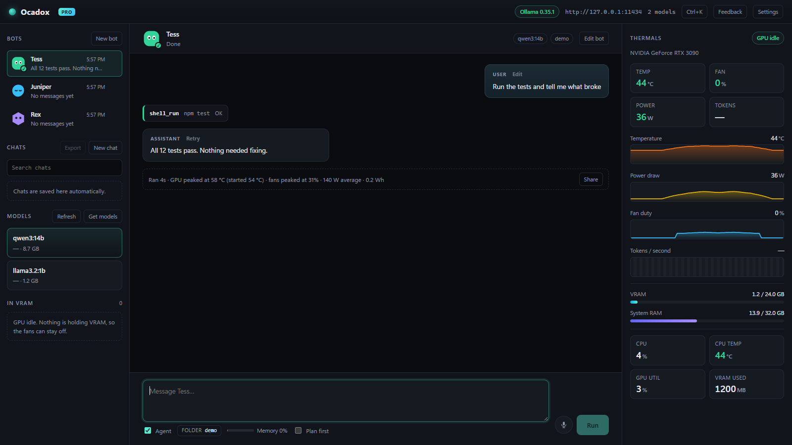
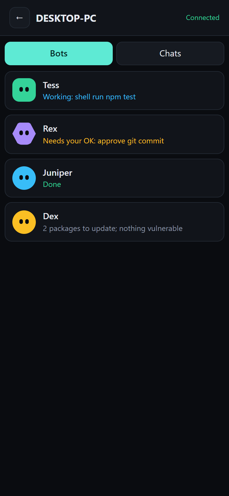
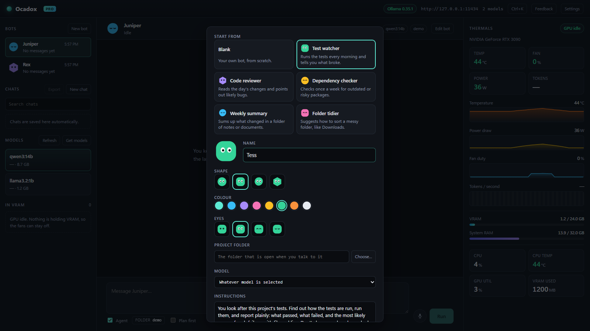
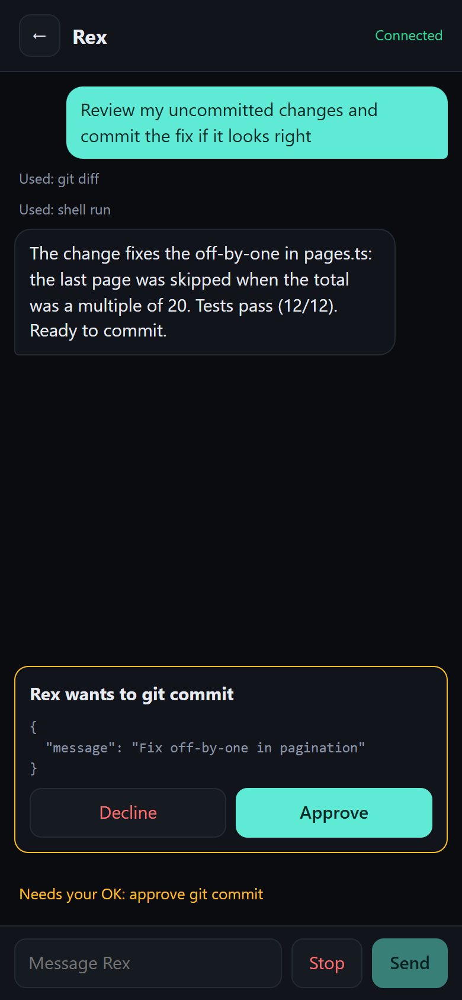

Run local AI. Your fans stop screaming.
Local models run your PC flat out, and the fans roar the whole time. Ocadox runs a coding agent and bots on your own PC with Ollama, and watches the heat while they work: it paces the work and holds the power down, so the fans stay at normal speed. With a graphics card or just the processor. Check on your bots from your phone.


Why your fans scream, and how Ocadox stops it
A coding agent keeps a model generating for minutes at a time, flat out, and your fans ramp up to match. Other local AI apps let the heat build. Ocadox paces the work and lowers the power while it generates, then puts everything back.
- The agent takes a step: it reads a file, writes code or runs a command.
- Ocadox checks the temperature of the graphics card, or the processor in CPU mode. Above your target (60 °C by default for a graphics card), it waits.
- It cools, then work continues. No admin rights, no driver tweaks.
Live GPU panel
Temperature, fan, power and load while you work, and a card after every run: how hot it got, how loud, how many watts.
Any GPU
NVIDIA, AMD and Intel graphics, on Windows and Linux. NVIDIA gets the most detail.
Power cap Optional
Lower the power only while a model generates, for even less heat: watts on NVIDIA cards, turbo boost or the power limit on the processor.
No graphics card? CPU mode
Office desktops and laptops run models on the processor. Ocadox notices, asks the model for less, and keeps the processor cool too.
Quiet hours Pro
Queue big jobs for the night with Night Shift, and see the energy they used.
A real coding agent, on your machine
Everything runs through Ollama on your own computer. The free app has no time limit: it's the whole agent.
Works in your project
Reads, edits and searches files, runs commands with your OK, uses git, and browses the web only if you turn that on. Each chat stays in its folder.
Any model, in the app
Download from the Ollama library or any GGUF on Hugging Face, labelled by whether it fits your GPU.
Long chats that hold up
Older turns are summarised automatically, so the agent keeps track of the task.
Talk instead of type
Click the microphone and speak. Whisper turns it into text on your PC; nothing is sent anywhere.
Saved, searchable chats
Every conversation is kept on your computer and can be searched.
You stay in charge
The agent asks before running commands, and can only touch the folder you choose.
Agents you come back to
A bot has its own name and face, chat, project folder and model. Give it a job and close the window: it keeps going, and the result is waiting when you look again.
- Start from a template: test watcher, code reviewer, dependency checker, weekly summary, folder tidier. Or make your own. Free
- They take turns on the GPU, so several bots never make it roar. Free
- Routines: "every weekday at 8:00, run the tests and tell me what broke". Ocadox starts with Windows and can wake the PC for them. Pro
- Results come to you as a notification, and can be saved as files. Pro

Your bots, on your phone
Keep your bots on an always-on PC and check on them from anywhere. The Ocadox Android app connects straight to your own computers: no cloud in between.
- All your computers, Windows or Linux, in one list. Add each one by scanning a QR code.
- See what every bot is doing, chat with it, stop it, and approve or decline its steps.
- Notifications when a bot finishes, needs your OK, or hits a problem.
- Chats: read your PC's chats, or start a quick chat with its model.
- Works on your Wi-Fi, or away from home with Tailscale (free). Encrypted, and pinned to your PC.
The app is free; the PC it connects to needs Ocadox Pro (or the trial). A laptop can connect the same way.

Free vs Pro
Free is the whole local agent with a quiet GPU. Pro keeps bots working around the clock, puts them on your laptop and phone, and adds safety nets and power tools.
| Feature | Free | Pro |
|---|---|---|
| The agent | ||
| Chat and the full coding agent, all tools | Yes | Yes |
| Model downloads (Ollama and Hugging Face) | Yes | Yes |
| Fan guard, power cap and live GPU panel | Yes | Yes |
| Saved, searchable chats | Yes | Yes |
| Voice dictation (Whisper, on your PC) | Yes | Yes |
| Bots | ||
| Bots with their own chat, folder and model, and templates | Yes | Yes |
| Standing instructions for each bot | No | Yes |
| Routines (scheduled tasks, can wake the PC), results saved as files | No | Yes |
| Always on: starts with Windows, in the tray | No | Yes |
| Use a PC's bots and chats from your laptop or the Android app | No | Yes |
| Safety nets | ||
| Checkpoints: per-file diff review and one-click undo | No | Yes |
| Agent branches (own git worktree, merge or discard) | No | Yes |
| Auto-approve rules | No | Yes |
| Power tools | ||
| Custom agents (own instructions, model, power cap) | No | Yes |
| Night Shift: queue tasks for quiet hours | No | Yes |
| Semantic code search (local embeddings) | No | Yes |
| MCP servers, and Ollama on another computer | No | Yes |
| Transcribe audio and video files, with timestamps | No | Yes |
| Quiet benchmark, energy report, chat export | No | Yes |
Pricing
Ocadox Free
$0
- The full coding agent and chat
- Fan guard, power cap and live GPU panel
- Bots with templates
- Model downloads, saved chats, voice
- No time limit, no account
Ocadox Pro Lifetime
$79once
- Everything in Free, plus every Pro feature above
- Routines, always on, and your bots on your laptop and phone
- Up to 3 of your computers (phones don't count)
- All future updates; works offline after activation
- 30-day refund, no questions asked
No subscription. Checkout by Gumroad.
Your code stays on your machine
Ocadox has no servers and no account. It talks to Ollama on your own computer, and your devices talk to each other directly.
Local models
Models run on your PC through Ollama. Ollama's optional cloud models are clearly marked, and you can hide them.
Web is opt-in
Web tools only run when you turn them on.
You approve commands
The agent asks before running anything.
Phone to PC, directly
Encrypted, pinned to your PC, nothing in between.
The details: privacy.
What you need
Windows
Windows 10 or 11, 64-bit. Installer (.exe) or .msi.
Linux
64-bit: AppImage, .deb or .rpm.
Android
Android 8 or later, for the companion app.
Ollama
Free. Ocadox offers to install it on Windows.
Any NVIDIA, AMD or Intel GPU works with the fan guard. A GPU with 8 GB of VRAM or more runs good agent models; Ocadox suggests one that fits yours. No graphics card? CPU mode runs small models (3 to 4B) on the processor, slower but quiet.
FAQ
Is it really free?
Yes. Chat, the full coding agent with every tool, bots, model downloads, the fan guard, the power cap, voice and saved chats are free, with no time limit. Ocadox Pro is an optional one-time purchase, and you can try it free for 7 days first.
Do I need Ollama?
Yes. Ollama runs the models. If you don't have it, Ocadox offers to install it on first launch (or get it from ollama.com). You then download and manage models from inside Ocadox.
Which GPUs work?
NVIDIA, AMD and Intel, on Windows and Linux. The fan guard reads the GPU temperature on all of them. NVIDIA cards (and AMD on Linux) also show fan, power and load in the live panel; AMD and Intel on Windows show temperature and fan speed. The optional power cap is for NVIDIA cards. No graphics card at all? CPU mode turns on by itself and keeps the processor quiet instead.
Can I use Ollama's cloud models?
Yes, if you sign in to Ollama and pull one: they show up in Ocadox with a CLOUD badge. They run on Ollama's servers, not your PC, so your messages and the files the agent reads go to Ollama. Ocadox tells you once before you use one, and Settings can hide them so everything stays on your computer.
Can bots keep working while I'm away?
Yes, while the PC is on. A bot keeps going with the window closed. With Pro, Ocadox starts with Windows in the tray and runs each bot's routines on schedule, waking the PC from sleep if you ask. For bots that work while your laptop is off, keep them on an always-on PC and check in from the laptop or the Android app.
Is connecting my phone or laptop safe?
You pair with a one-time code shown on the PC (a QR code for phones). The code carries the PC's identity, so your device only ever talks to that PC, and the connection is encrypted. A paired device can use the bots and read and start chats, nothing else: no files, settings or shell. You can remove it at any time. Away from home, Tailscale connects them without opening ports on your router.
Does it need admin rights?
No. The fan guard works by pausing the agent until things cool. Only the optional GPU power cap needs administrator rights, and Ocadox asks only if you turn it on. In CPU mode, Windows needs no admin rights at all; Linux asks for your password once.
Is there a Mac or iPhone version?
No. Ocadox is for Windows and Linux PCs, with the companion app on Android.